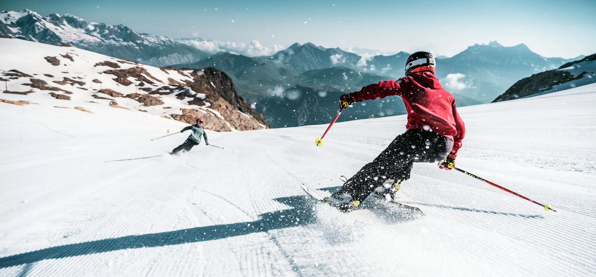
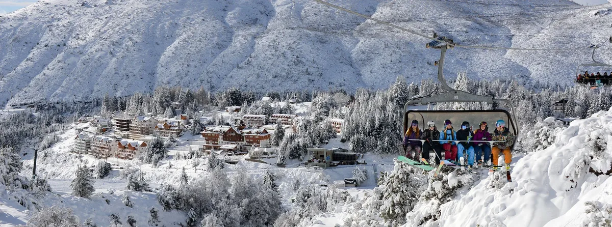
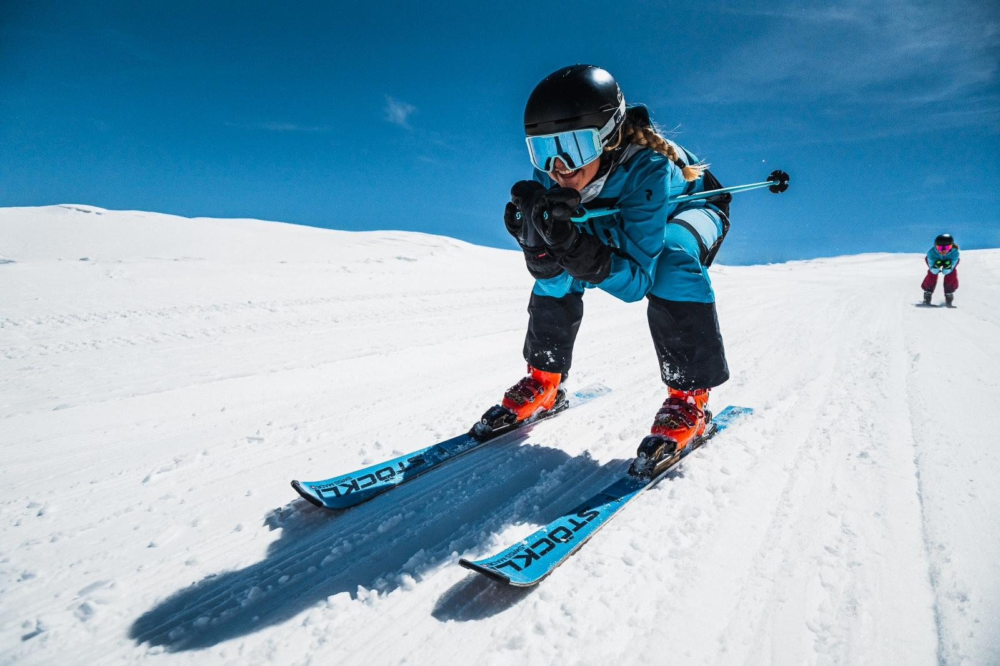

大教堂山2026：开放时间、通票价格及完整指南
南美洲最大的滑雪中心将于6月29日开放。规划巴里洛切之旅所需的一切：赛季日期、2026年通票价格、如何抵达及住宿建议。

距巴里洛切市中心约19公里，大教堂山是南半球最大的滑雪中心：120公里雪道、38条缆车线路，每小时运载能力高达6000人次。如果您计划在2026年赴巴塔哥尼亚滑雪，这份指南涵盖您所需了解的一切：开放时间、通票价格、如何前往及住宿选择。
大教堂山2026年何时开放？
官方开放日期定于2026年6月29日（周一），具体视雪况而定。雪季通常延续至十月初，是南美洲持续时间最长的雪季之一。
| 时段 | 2026年大致日期 | 特点 |
|---|---|---|
| 开放 | 6月29日 | 赛季初，人少，价格更优惠 |
| 淡季 | 6月29日 – 7月11日 · 9月 – 10月初 | 雪道宁静，票价较低 |
| 旺季 | 7月12日 – 8月10日 | 冬季假期：人流量最大，价格最高 |
| 关闭 | 十月初 | 视当年降雪情况而定 |
确切日期将根据雪况提前数周公布。购票前请务必在官方网站核实最新信息。
2026年通票价格
大教堂山已启动预售：成人单日通票预售价从160,000阿根廷比索起，需注意——提前预售票仅限现金付款（阿根廷比索）。旺季（7月假期）价格上涨，6至11岁儿童及65岁以上长者可享受优惠票价。
| 通票 / 服务 | 2026年价格（ARS） |
|---|---|
| 成人单日通票（预售，现金） | 从 $160,000 起 |
| 儿童（6–11岁）/ 老年人（65岁+）单日票 | 优惠票价 |
| 多日通票 | 累进折扣（每日均价更低） |
| 装备租赁（滑雪板或单板） | 每日 $55,000 – $70,000 |
预售价格为该中心2026年公布数据，其余为参考价格：出行前请在大教堂山高巴塔哥尼亚官方网站确认最新票价、付款方式及优惠活动。
💡 省钱妙招：选择在开放周（六月底）或九月滑雪，雪道条件相同，但人流量大幅减少，票价也比七月冬季假期更为实惠。
山地数据
各级别滑雪者均可找到适合的地形：山脚设有适合初学者的绿道和滑雪学校，中级者可享受绵长下坡，山顶极具挑战性的野雪区域吸引来自世界各地的滑雪爱好者。积雪由天然降雪与完善的人工造雪系统共同保障，即便在少雪赛季也能正常运营。2026年，大教堂山在里约热内卢荣获O Melhor de Viagem & Turismo大奖，这是巴西最重要的旅游奖项——巴西是阿根廷巴塔哥尼亚最大的客源市场。



如何抵达大教堂山
该山距巴里洛切市中心约19公里，驾车约30分钟。出行方式如下：
| 出发地 | 方式 | 时间 |
|---|---|---|
| 巴里洛切市中心 | 自驾、接送车或公共汽车（3路大教堂山线） | 约30分钟 |
| 巴里洛切机场（BRC） | 从布宜诺斯艾利斯直飞（约2.5小时）+ 转乘 | 约1小时至山脚 |
| 布宜诺斯艾利斯 | 飞机（2.5小时）或长途客车（约22小时） | — |
赛季期间，市中心至山脚设有定期公共汽车服务，酒店及旅行社也提供接送服务。无需自驾即可前往滑雪。
住宿选择
/* gp-lang-banner */(function(){ var SUP=['es','en','pt','zh']; var MSG={es:'Leé este artículo en español',en:'Read this article in English',pt:'Leia este artigo em português',zh:'\u9605\u8bfb\u672c\u6587\u7684\u4e2d\u6587\u7248'}; function norm(l){l=(l||'').toLowerCase();return l.indexOf('zh')===0?'zh':l.slice(0,2);} var cur=norm(document.documentElement.lang||'es'); var want=norm(navigator.language||navigator.userLanguage||'es'); if(SUP.indexOf(want)<0||want===cur)return; try{if(sessionStorage.getItem('gpLangDismiss'))return;}catch(e){} var file=location.pathname.split('/').pop(); var base=file.replace(/-(en|pt|zh)\.html$/,'').replace(/\.html$/,''); var target=base+(want==='es'?'':'-'+want)+'.html'; var bar=document.createElement('div'); bar.style.cssText='position:sticky;top:0;z-index:9999;display:flex;align-items:center;justify-content:center;gap:14px;background:#1c2d3d;color:#fff;font-family:Inter,system-ui,sans-serif;font-size:14px;font-weight:600;padding:10px 16px;box-shadow:0 2px 8px rgba(0,0,0,.18);'; var a=document.createElement('a'); a.href=target;a.textContent='\ud83d\udcd6 '+MSG[want]+' \u2192'; a.style.cssText='color:#fff;text-decoration:none;border-bottom:1.5px solid #7aadcc;padding-bottom:1px;'; var x=document.createElement('button'); x.type='button';x.textContent='\u2715';x.setAttribute('aria-label','close'); x.style.cssText='background:none;border:none;color:#7aadcc;font-size:16px;cursor:pointer;line-height:1;padding:0 4px;'; x.onclick=function(){bar.parentNode&&bar.parentNode.removeChild(bar);try{sessionStorage.setItem('gpLangDismiss','1');}catch(e){}}; bar.appendChild(a);bar.appendChild(x); document.body.insertBefore(bar,document.body.firstChild); })();